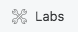
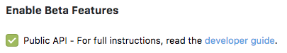
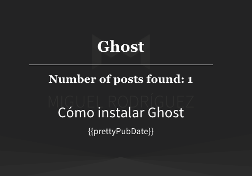

Pues siguiendo un poco con la aventura de Ghost, hoy vamos a ver como agregar un buscador.
Para ello vamos a hacer uso de un plugin de jQuery que usa la API de nuestro blog, ghostHunter y podéis descargarlo directamente del repositorio oficial en GitHub.
Paso 1 - Incluir ghostHunter en nuestro blog
Nos descargamos el plugin y lo agregamos, en mi caso lo voy a agregar directamente en la plantilla, aun que también lo podemos agregar directamente desde el panel de nuestro blog desde la sección <> Code injection.
Vamos la carpeta de nuestro tema activo y modificamos el archivo default.hbs y antes de la etiqueta </body> agregamos el siguiente código.
<script src="js/jquery.ghostHunter.min.js"></script>
<script src="text/javascript">
$("#search-field").ghostHunter({
results : "#results"
});
</script>
Paso 2 - Agregar un formulario de búsqueda y una sección de resultados
Para este ejemplo lo que vamos hacer es agregar el formulario y los resultados antes del contenido
<form>
<input id="search-field" />
<input type="submit" value="search">
</form>
<section id="results"></section>
Paso 3 - Habilitar API de ghost
Este paso es último que tenemos que hacer para empezar a ver como funciona nuestro buscador.
Para ello tenemos que ir a nuestro panel de ghost y en la sección

Y al final de la misma marcamos esta casilla

Paso 4 - Probar nuestro buscador
Ahora con un poco de CSS, podemos hacer que nuestro buscador se vea un poco más profesional.

Paso 5 - Mejorar nuestro buscador
Como vemos en la captura de arriba esto no está del todo correcto, por lo que vamos a hacerle unas cuantas mejoras 🙃
Hacer ghostHunter más usable
Lo primero es hacer el buscado más usable, más amigable. Para ello vamos a configurarlo de manera que busque sin necesidad de pulsar Enter o el botón de buscar, agregando la opción onKeyUp: true.
<script src="text/javascript">
$("#search-field").ghostHunter({
results : "#results",
// Nuevo
onKeyUp: true
});
</script>
Modificar resultados ghostHunter
Como vemos en los resultados se está llamando a una variable que no tenemos y los resultados aparecen en inglés, para cambiar esto sólo tenemos que agregar esta lineas.
<script src="text/javascript">
$("#search-field").ghostHunter({
results : "#results",
onKeyUp: true,
// Nuevo
result_template: '<a href="{{link}}"><h2>{{title}}</h2>R</a>',
info_template: "<p>Número de resultados: {{amount}}</p>"
});
</script>
En el result_template podemos usar cualquiera de las siguientes variables: title, description, link, pubDate.
Y listo ya podemos hacer búsquedas en nuestro Blog, hasta la próxima 👻.